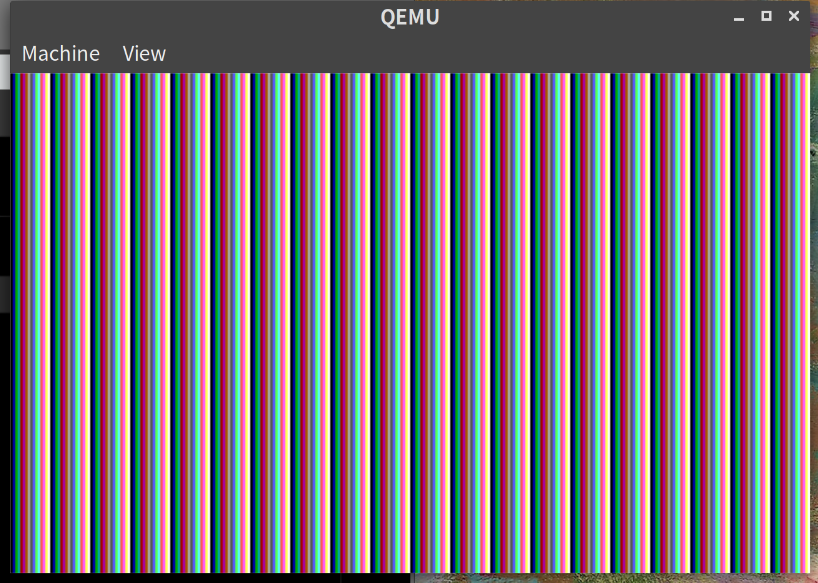
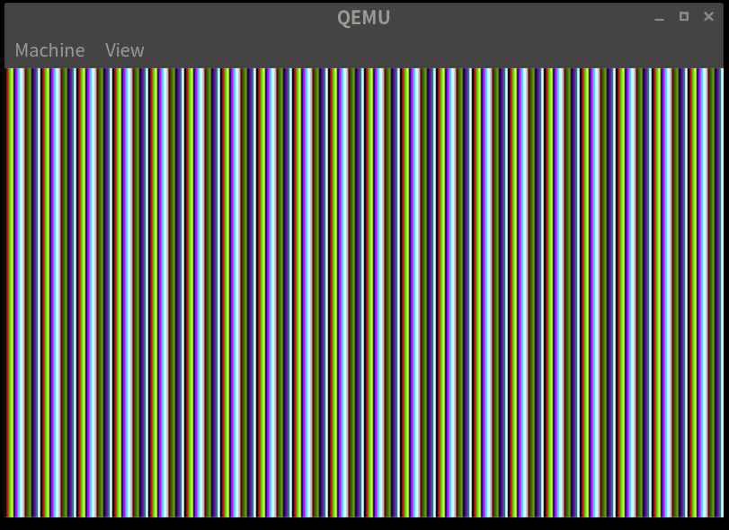
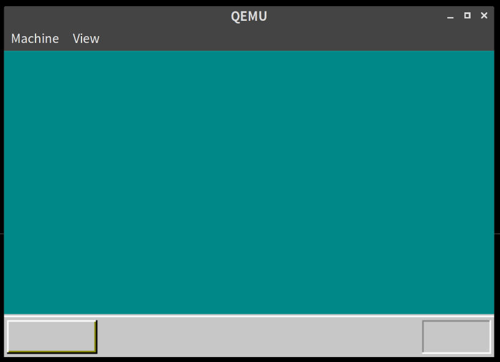

「30日でできる！OS自作入門」をRustで。4日目
Posted on June 5, 2019
3日目 の続きとなる。 「30日でできる！OS自作入門」の本に沿ってすすめる。
色をかえる
前回、白一色での出力だったが、本に沿っていろいろな色が表示されるように変更する。
// lib.rs
#[no_mangle]
fn show_color(i: u32) { // show_white を show_color にした。
let ptr = unsafe { &mut *(i as *mut u32) };
*ptr = i & 0x0f // <- 15固定だったのを i & 0x0f を指定するようにした
}
#[no_mangle]
#[start]
pub extern "C" fn haribote_os() -> ! {
for i in 0xa000..0xaffff {
show_color(i); // <- 呼出側も変更
}
loop {
hlt()
}
}これで make run してみると以下のように表示された。

パレットの設定をする
カラーパレットのセット用の関数を準備する。VGAまわりは vga というモジュールにまとめようと思う。
まず、エントリーポイントとなる関数に呼び出すコードを追加する。
// lib.rs
mod vga; // <- 追加
#[no_mangle]
#[start]
pub extern "C" fn haribote_os() -> ! {
vga::set_palette(); // <- 追加
for i in 0xa000..0xaffff {
show_white(i);
}
loop {
hlt()
}
}さらに、vga.rsを追加する。
// vga.rs
// 本ではCで定義されている色設定の定数
const COLOR_PALETTE: [[u8; 3]; 16] = [
[0x00, 0x00, 0x00], /* 0:黒 */
[0xff, 0x00, 0x00], /* 1:明るい赤 */
[0x00, 0xff, 0x00], /* 2:明るい緑 */
[0xff, 0xff, 0x00], /* 3:明るい黄色 */
[0x00, 0x00, 0xff], /* 4:明るい青 */
[0xff, 0x00, 0xff], /* 5:明るい紫 */
[0x00, 0xff, 0xff], /* 6:明るい水色 */
[0xff, 0xff, 0xff], /* 7:白 */
[0xc6, 0xc6, 0xc6], /* 8:明るい灰色 */
[0x84, 0x00, 0x00], /* 9:暗い赤 */
[0x00, 0x84, 0x00], /* 10:暗い緑 */
[0x84, 0x84, 0x00], /* 11:暗い黄色 */
[0x00, 0x00, 0x84], /* 12:暗い青 */
[0x84, 0x00, 0x84], /* 13:暗い紫 */
[0x00, 0x84, 0x84], /* 14:暗い水色 */
[0x84, 0x84, 0x84] /* 15:暗い灰色 */
];本では、カラーパレットの設定の際、EFLAGSを取得とCLIの設定をassemblyでやっている。
Rustでのうまい方法が思いつかず、結局 asm! マクロでそのまま書くことにした。assemblyをまとめるように asm.rs を作る
// asm.rs
pub fn load_eflags() -> i32 {
let result: i32;
unsafe {
asm!("PUSHFD" : : : : "intel");
asm!("POP EAX" : "={EAX}"(result) : : : "intel");
}
result
}
pub fn store_eflags(flags: i32) {
unsafe {
asm!("PUSH EAX" : : "EAX"(flags) : : "intel");
asm!("POPFD");
}
}
pub fn cli() {
unsafe {
asm!("CLI" : : : : "intel");
}
}
pub fn out8(port: u32, data: u8) {
unsafe {
asm!("OUT DX,AL" : : "{DX}"(port), "{AL}"(data) : : "intel");
}
}上記定義した関数を使って、vga.rsの方に set_palette 関数を定義する
// vga.rs
pub fn set_palette() {
let eflags = asm::load_eflags();
asm::cli();
asm::out8(0x03c8, 0);
for i in 0..15 {
// 書き込むときは上位2ビットを0にしないといけない。See: http://oswiki.osask.jp/?VGA#o2d4bfd3
asm::out8(0x03c9, COLOR_PALETTE[i][0] >> 2);
asm::out8(0x03c9, COLOR_PALETTE[i][1] >> 2);
asm::out8(0x03c9, COLOR_PALETTE[i][2] >> 2);
}
asm::store_eflags(eflags);
}make runすると以下のようになり、色がかわったことがわかる。

※比較用に上記のパレットをカスタマイズする前の画像を再掲する
四角を描画する
四角を描画するための関数を定義する。
// vga.rs
pub fn boxfill8(ptr: *mut u8, offset: isize, color: Color, x0: isize, y0: isize, x1: isize, y1: isize) {
for y in y0..=y1 {
for x in x0..=x1 {
let ptr = unsafe { &mut *(ptr.offset(y * offset + x)) };
*ptr = color as u8;
}
}
}
// 簡単に色が指定できるようにenumも定義しておく
#[allow(dead_code)]
#[derive(Debug, Clone, Copy, PartialEq, Eq)]
#[repr(u8)]
pub enum Color {
Black = 0,
LightRed = 1,
LightGreen = 2,
LightYellow = 3,
LightBlue = 4,
LightPurple = 5,
LightCyan = 6,
White = 7,
LightGray = 8,
DarkRed = 9,
DarkGreen = 10,
DarkYellow = 11,
DarkBlue = 12,
DarkPurple = 13,
DarkCyan = 14,
DarkGray = 15,
}これを使って、4日目最後となる部分の描画を行う
// lib.rs
fn render_boxes() {
use vga::Color::*;
let vram = unsafe { &mut *(0xa0000 as *mut u8) };
let xsize = 320;
let ysize = 200;
vga::boxfill8(vram, xsize, DarkCyan, 0, 0, xsize - 1, ysize - 29);
vga::boxfill8(vram, xsize, LightGray, 0, ysize - 28, xsize - 1, ysize - 28);
vga::boxfill8(vram, xsize, White, 0, ysize - 27, xsize - 1, ysize - 27);
vga::boxfill8(vram, xsize, LightGray, 0, ysize - 26, xsize - 1, ysize - 1);
vga::boxfill8(vram, xsize, White, 3, ysize - 24, 59, ysize - 24);
vga::boxfill8(vram, xsize, White, 2, ysize - 24, 2, ysize - 4);
vga::boxfill8(vram, xsize, DarkYellow, 3, ysize - 4, 59, ysize - 4);
vga::boxfill8(vram, xsize, DarkYellow, 59, ysize - 23, 59, ysize - 5);
vga::boxfill8(vram, xsize, Black, 2, ysize - 3, 59, ysize - 3);
vga::boxfill8(vram, xsize, Black, 60, ysize - 24, 60, ysize - 3);
vga::boxfill8(vram, xsize, DarkGray, xsize - 47, ysize - 24, xsize - 4, ysize - 24);
vga::boxfill8(vram, xsize, DarkGray, xsize - 47, ysize - 23, xsize - 47, ysize - 4);
vga::boxfill8(vram, xsize, White, xsize - 47, ysize - 3, xsize - 4, ysize - 3);
vga::boxfill8(vram, xsize, White, xsize - 3, ysize - 24, xsize - 3, ysize - 3);
}
#[no_mangle]
#[start]
pub extern "C" fn haribote_os() -> ! {
vga::set_palette();
render_boxes(); // <- 変更
loop {
hlt()
}
}make runすると以下のようにOS風の？見た目ができた。

4日目は以上となる。
ここまでの内容のコードはyoshitsugu/hariboteos_in_rustのday4としてタグを打ってある。